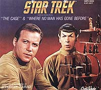
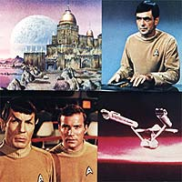

A
grande maioria dos fãs de Jornada nas Estrelas cresceu
vendo a Série Clássica. Os mais novos tiveram a chance de
conhecê-la a partir de 1991 na extinta TV Manchete. Para todos os
fãs uma das coisas mais marcantes sempre foi a sequência de
abertura dos episódios, com o famoso texto em off: "espaço,
a fronteira final... essas são as viagens de cinco anos da nave
estelar Enterprise..." juntamente com o imortal tema da série,
composta por Alexander Courage.

Nascido
na Philadelphia (USA) em 10 de dezembro de 1919, Alexander cresceu
em Nova Jersey e estudou no Conservatório Musical de Eastman.
Alistando-se mais tarde no exército, Courage ganhou muita experiência
com trilhas para dramas em seu serviço na rádio do exército,
onde ajudava a produzir os programas. Ele trabalhou como
orquestrador em alguns dos maiores musicais do estúdio MGM,
incluindo "Porgy and Bess", "Oklahome!" e
"My Fair Lady".
Como compositor criou músicas para episódios de diversas séries
de TV como "Voyage to the Bottom of the Sea", "Lost
in Space" e "Daniel Boone" e é claro, Jornada
nas Estrelas. No cinema Courage trabalhou mais ativamente como
orquestrador, orquestrando partituras para Jerry Goldsmith e John
Williams, em filmes como "Hook", "Hollow Man",
"The Mummy", "Jornada nas Estrelas - Primeiro
Contato" e "Jurassic Park". O último filme
mais famoso que Alexander Courage compôs e conduziu a trilha
sonora sem ser apenas orquestrador foi "Superman IV: The
Quest for Peace".

Mesmo
com todo esse currículo, o veterano compositor e orquestrador é
sempre lembrado mais fortemente pelo tema de Jornada nas
Estrelas, série original. Courage foi contratado por Gene
Roddenberry para fazer o score do primeiro episódio-piloto, "The
Cage". O piloto foi recusado pela NBC na época por ser
"cerebral demais" para os telespectadores, e Roddenberry
tratou de produzir outro episódio-piloto a pedido da NBC. Courage
foi mantido para fazer a trilha e em "Where No Man Has
Gone Before" e o tema de abertura de "The Cage"
foi rearranjado para algo mais trabalhado. Estava criado o tema de
Jornada nas Estrelas.
Além do tema principal, algumas das músicas
criadas pelo compositor foram utilizadas na grande maioria dos
episódios da Série Clássica, sendo que 45 dos episódios
das três temporadas não tiveram um compositor em especial, e sim
uma mescla de músicas de diversos episódios.
Dos 34 episódios restantes, os que Alexander Courage compôs
temas foram:
|
Ano
|
Episódio
|
Data
de gravação
|
|
1
|
Where
No Man Has Gone Before |
29.11.1965 |
| 1 |
The
Man Trap |
19.08.1966 |
| 1 |
The
Naked Time |
31.08.1966 |
| 3 |
The
Enterprise Incident |
05.08.1968 |
| 3 |
Plato's
Stepchildren |
25.10.1968 |
Os demais episódios da Série Clássica
foram compostos por Sol Kaplan, Fred Steiner, Gerald Fried, George
Duning e Jerry Fielding.
O tema criado por Alexander Courage permanece imortal mais de 35
anos depois de ter sido gravado pela primeira vez, e novos fãs
nascerão e crescerão ouvindo "espaço... a fronteira
final" na voz de Kirk, juntamente com a música que a
acompanha.